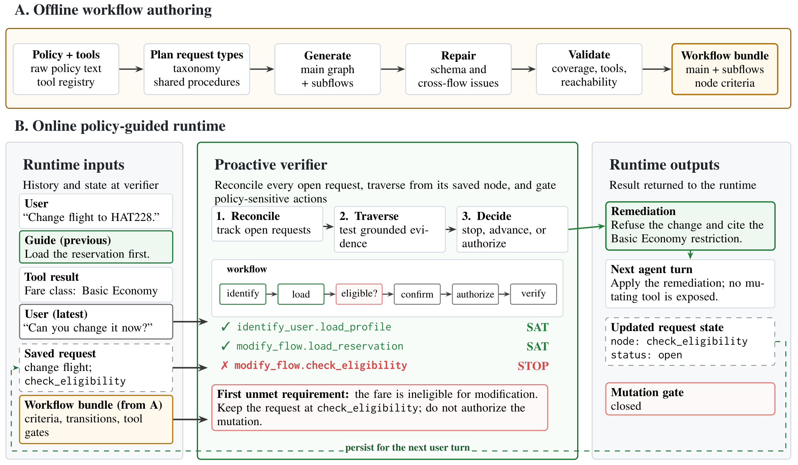
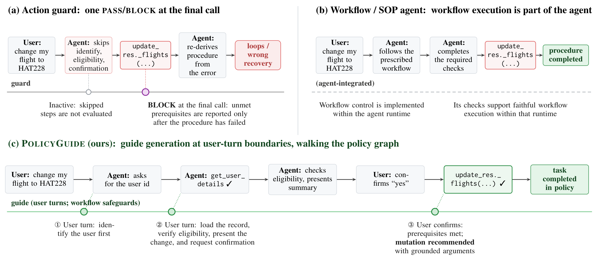
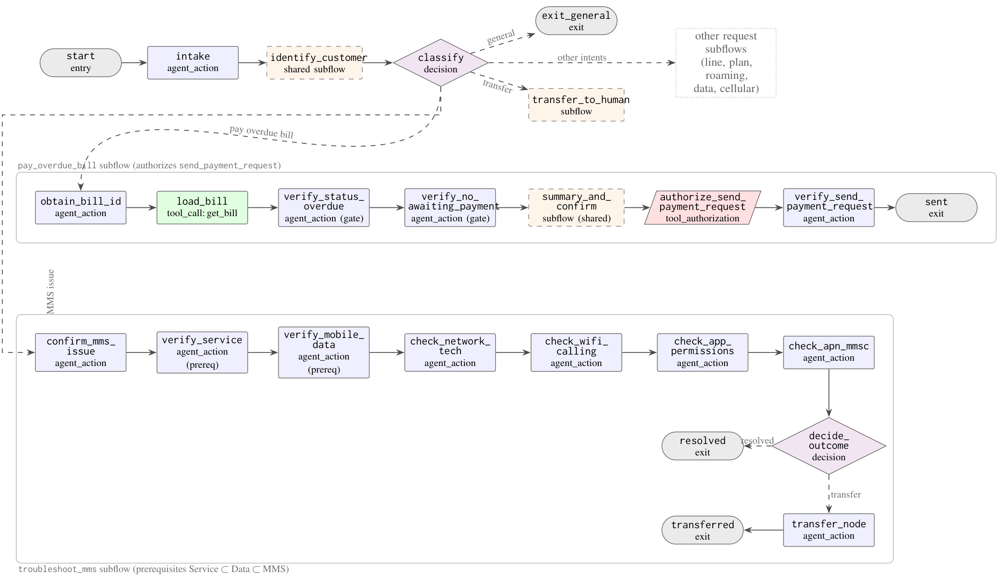

Workflow guidance for LLM agents / 2026
PolicyGuideFrom Guarding One Action to Guiding the Whole Workflow for Policy-Compliant LLM Agents
Code and workflow specifications are forthcoming.


Abstract
Guide the procedure before the final action
A policy-compliant outcome requires both avoiding forbidden actions and completing required procedure. An agent can miss an identification step, select the wrong diagnostic branch, or give a premature instruction long before it proposes a mutating tool call. An action-local guard discovers some failures too late, and cannot intercept procedures that contain no agent-side mutation.
PolicyGuide compiles a domain policy into a reusable workflow graph and uses an external verifier to track progress. At user-turn boundaries, the verifier reconciles open requests, resumes from each request’s persisted position, and checks grounded evidence until it reaches the first unmet requirement. It returns focused guidance and updated authorization state to the general-purpose agent.
Across the airline, retail, and telecom base splits of τ²-bench, PolicyGuide raises the mean Pass⁴ from approximately 0.42 to 0.62 with a GPT-5.4 actor and verifier. The largest improvement occurs in telecom’s ordered troubleshooting workflows. Diagnostic ablations, reuse across agent families, adversarial-user evaluation, and an author-designed trace audit examine what contributes to the improvement and where the evidence remains limited.
Method
A frozen workflow, a growing history, and persistent request state


Figure 2 · Paper v1.
Compile the policy once
The offline pipeline extracts tool specifications and request types, plans shared procedures and subflows, generates graph nodes, repairs schema issues, and validates the assembled workflow. Nodes represent agent actions, user responses, read-only calls, decisions, subflow transitions, and mutating-tool authorizations. Each node states the evidence needed to satisfy it.
One GPT-5.4-authored workflow is frozen per domain and reused across the experiments. Programmatic checks cover valid tools, graph composition, branch structure, reachability, and mutation authorization. The authors also review the frozen graphs against the source policy without manually editing the experimental workflows.
Reconcile requests, then traverse
At runtime, the verifier receives the policy, tool specifications, graph, conversation, and saved request records. It merges duplicate requests, retains continuing ones, adds new ones, and drops abandoned ones. For every open request, it walks from the saved node across requirements already supported by the history, stopping at the first unmet condition.
Tool results establish facts and eligibility; user messages establish the user’s own choices and consent. Code owns persistence: it rejects unknown node identifiers, filters authorization outputs against the tool inventory, and saves the updated request positions. One verifier generation can advance several nodes and coordinate several requests.
How the evaluated gate actually behaves
The verifier fires before each response to a user turn, and after the first unauthorized mutation attempted within that user-turn region. That mutation is intercepted before execution and triggers corrective guidance. The one-shot gate then disarms for an immediate retry to avoid deadlock. Other workflow actions are steered by remediation rather than hard-blocked. This advisory runtime is not continuous mandatory enforcement.
ILLUSTRATIVE WALKTHROUGH · AIRLINE REQUEST
“I’d like to change my flight.”
Identify the user
The user requests a flight change. Their identity has not been established.
A simplified, scripted illustration of the method; no live model or booking system is connected.
Section 3; Algorithm 1; Appendices D, E, G · Paper v1.
Results
The largest benefit is on ordered telecom workflows
The main evaluation uses 50 airline tasks, 114 retail tasks, and 114 telecom tasks, each with four trials. Pass¹ is average per-trial success; Pass⁴ requires success on all four trials. These metrics assess final database state and task assertions, not every intermediate procedural step. The actor and verifier are both GPT-5.4, with a fixed GPT-4.1 user simulator.
| Domain | System | Pass¹ | Pass⁴ |
|---|---|---|---|
| Airline · 50 tasks | ReAct | 0.640 | 0.460 |
| Airline · 50 tasks | PolicyGuard | 0.710 | 0.580 |
| Airline · 50 tasks | PolicyGuide | 0.775 | 0.620 |
| Retail · 114 tasks | ReAct | 0.800 | 0.596 |
| Retail · 114 tasks | PolicyGuard | 0.645 | 0.360 |
| Retail · 114 tasks | PolicyGuide | 0.809 | 0.614 |
| Telecom · 114 tasks | ReAct | 0.384 | 0.193 |
| Telecom · 114 tasks | PolicyGuard | 0.406 | 0.202 |
| Telecom · 114 tasks | PolicyGuide | 0.866 | 0.614 |
Table 1 · Paper v1.
Telecom requires diagnose–instruct–verify chains, including actions performed by the user on a device. These steps may never trigger an agent-side mutation guard. PolicyGuide improves telecom’s mutation-required Pass⁴ from 0.042 to 0.549, alongside an improvement on refusal-required tasks from 0.442 to 0.721.
Retail’s overall gain over ReAct is only 0.018 and is not statistically significant. Its mutation-required Pass⁴ remains 0.587, while refusal-required performance improves from 0.700 to 0.900. Airline also shows a tradeoff against PolicyGuard: PolicyGuide improves legitimate-mutation completion (0.192 → 0.346), but its refusal slice is lower (1.000 → 0.917). The headline mean should be read together with these domain and task-slice results.
Table 1; Appendix C · Paper v1.
Ablations
Graph structure and external tracking both matter
PolicyGuide-Self places the same graph in the acting agent’s prompt but removes the external verifier, persistent state, remediation, and corrective intercept. PolicyGuide-Raw keeps the external verifier schedule and guidance channel but substitutes raw policy text for the graph. These are diagnostic comparisons: Self removes a bundle of runtime components, so it does not isolate persistence alone.
| Evaluation split | ReAct | Graph in actor (Self) | External raw-policy guide | PolicyGuide |
|---|---|---|---|---|
| Airline base · 50 tasks | 0.460 | 0.480 | 0.520 | 0.620 |
| Retail test · 40 tasks | 0.575 | 0.350 | 0.575 | 0.725 |
| Telecom test · 40 tasks | 0.250 | 0.325 | 0.350 | 0.675 |
Table 2; retail/telecom use the benchmark test splits, not the 114-task base splits · Paper v1.
Giving the actor a graph does not raise mutation-required Pass⁴ above ReAct in any of these domains. Retaining external guidance but removing graph structure improves less than full PolicyGuide, with the largest gap again on telecom. The retail and telecom test splits contain 40 tasks and differ in composition from the main base splits; the two tables should not be combined as if they measured the same task set.
A matched workflow-controller comparison
| System | Runtime approach | Pass⁴ |
|---|---|---|
| ReAct | Actor only | 0.250 |
| PolicyGuard | Action-local verification | 0.325 |
| FlowAgent | PDL + API controllers | 0.350 |
| PolicyGuide | External graph verifier | 0.675 |
Table 3 · Paper v1.
For this comparison, the same frozen graph is deterministically compiled into FlowAgent’s PDL representation, avoiding a second LLM authoring step. FlowAgent uses its released API-dependency and duplicate-call controllers. The experiment therefore compares runtime approaches with matched underlying workflow content.
Workflow example
Follow the relevant branch to a grounded completion


Figure 14 · Paper v1.
The overdue-bill branch obtains the bill identifier, loads the bill, checks overdue status and existing payment requests, summarizes the action for confirmation, authorizes the payment request, and verifies the resulting tool output. Authorization is one step inside the procedure rather than the entire procedure.
The MMS branch checks service and data prerequisites before progressing through documented causes such as network generation, Wi-Fi calling, app permissions, and MMSC settings. It closes by verifying resolution or transferring the request. This illustrates why a sequence of user-facing instructions needs a different intervention schedule from a final database mutation.
The full frozen graphs contain 158 airline nodes, 104 retail nodes, and 127 telecom nodes. A validation flag for telecom’s exposed disable_roaming tool is explained in the paper: the source policy specifies enabling roaming but provides no authorization to disable it, so the graph deliberately leaves that action outside its authorized scope.
Appendix E, Table 16; Appendix H · Paper v1.
Transfer & compliance
Reuse the workflow, then examine the whole trace
Transfer across agent families
The airline workflow is reused without re-authoring for Claude Sonnet 4.6 and Gemini 2.5 Pro. Each actor is paired with a verifier from its own model family. This tests executor-side transfer of one authored graph; it does not test whether different workflow-authoring models produce equally good graphs.
| Actor / paired verifier | ReAct | PolicyGuard | PolicyGuide |
|---|---|---|---|
| GPT-5.4 | 0.460 | 0.580 | 0.620 |
| Claude Sonnet 4.6 | 0.720 | 0.780 | 0.780 |
| Gemini 2.5 Pro | 0.480 | 0.600 | 0.680 |
Table 4 · Paper v1.
Successful outcomes can still skip procedure
Because the benchmark’s final-state checks do not certify intermediate ordering, the authors design an additional telecom rubric covering identification, diagnosis before intervention, consent, correction order, and final verification. Step-TCR measures applicable checks passed within outcome-passing traces; Trace-TCR requires all those checks. Process-valid rate uses all task–run pairs and requires both a successful outcome and a passing procedural audit.
| System | Step-TCR* | Trace-TCR* | Process-valid rate |
|---|---|---|---|
| ReAct | 86.4 | 35.4 | 17.5 |
| PolicyGuard | 85.7 | 23.9 | 13.1 |
| PolicyGuide | 94.5 | 63.4 | 56.2 |
Table 5; *conditioned on outcome-passing traces · Paper v1.
The 56.2% process-valid rate is an end-to-end pooled task–run measure, not Pass⁴. The audit is exploratory and author-designed: it uses selected observable requirements and deterministic event/text matching, and has no second-annotator agreement estimate. Its gains support improved measured procedure, not exhaustive natural-language compliance.
Adversarial users
On the release-aligned 20-task CRAFT airline attack set, the observed per-trial attack-success rate is 0.087 for PolicyGuide, 0.125 for PolicyGuard, and 0.200 for ReAct. PolicyGuide is lowest across the reported ASR@k curve. This evaluation covers persuasive airline attacks; it does not establish cross-domain or adaptive-attack robustness.
Sections 4.5–4.7; Figure 6 · Paper v1.
Cost & scope
More reliable workflows require more verifier work
The guide fires about 7.4–11.5 times per task and adds $0.34–$0.56 in measured guide-side model usage under the paper’s configuration. Although most prompt tokens are cached, each call produces a substantial structured audit. The reported prices and timings describe the experiment, not a current service quote.
| Domain | ReAct | PolicyGuide | Ratio |
|---|---|---|---|
| Airline | 36.4 s/task | 210.1 s/task | 5.78× |
| Retail | 34.6 s/task | 193.6 s/task | 5.60× |
| Telecom | 45.5 s/task | 247.6 s/task | 5.45× |
Appendix D, Table 15; actor, verifier, user simulator, and tools included · Paper v1.
The theoretical analysis assumes a faithful graph, an ideal binding verifier, and intervention before every reachable first procedural deviation. The evaluated advisory runtime does not unconditionally satisfy those assumptions: deviations can occur between firings, the corrective gate permits a retry, and verifier exceptions are fail-open. Its empirical results should not be read as a formal compliance guarantee.
Evaluation covers three English customer-service domains with simulated users. Workflow authoring is fixed to one model, retail’s overall gain is not significant, and the trace audit is incomplete. Broader policy regimes, live users, stronger audits, and less costly verifier outputs remain open directions. The official repository currently marks code and workflow specifications as forthcoming.
Limitations; Appendices A and D · Paper v1.
Reference
BibTeX
@article{kang2026policyguide,
title={PolicyGuide: From Guarding One Action to Guiding the Whole Workflow for Policy-Compliant LLM Agents},
author={Kang, Seongjae and Yu, Taehyung and Hwang, Sung Ju},
journal={arXiv preprint arXiv:2608.19861},
year={2026},
url={https://arxiv.org/abs/2608.19861}
}Explanations on this page summarize the paper. Figures and numbered results are attributed to version 1; see the paper for complete protocols and references.